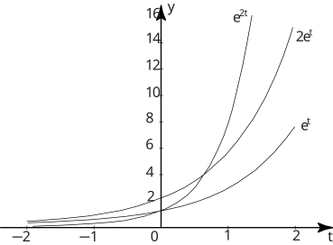

Long description: Block6_FigNEW1

Alt text: A graph displays three curves, all exponential functions of time, plotted on a Cartesian coordinate system.
This description was generated by AI and has not been verified by a human. If you spot an error, please use the feedback link below.
- The graph shows three distinct curves plotted on a set of axes where the horizontal axis represents time, labeled as \(t\), and the vertical axis represents the function value, labeled as \(y\).
- The axes are marked with numerical increments, ranging from \(-2\) to \(2\) on the time axis and from \(-2\) to \(16\) on the \(y\)-axis.
- Three exponential functions are drawn: \(e^t\), \(2e^t\), and \(e^{2t}\).
- All three curves are monotonically increasing, starting near the origin and rising steeply as \(t\) increases.
- At \(t=0\), the graph shows the following values: the curve \(e^t\) passes through the point \((0, 1)\); the curve \(2e^t\) passes through the point \((0, 2)\); and the curve \(e^{2t}\) passes through the point \((0, 1)\).
- As \(t\) increases to \(2\), the values are approximately: \(e^t \rightarrow e^2 \text{ (about } 7.4)\text{, } 2e^t \rightarrow 2e^2 \text{ (about } 14.8)\text{, and } e^{2t} \rightarrow e^4 \text{ (about } 54.6)\text{.}
- The curves illustrate that for positive values of \)t\(, the function \)e^{2t}\( grows much faster than \)2e^t\(, which in turn grows faster than \)e^t$.